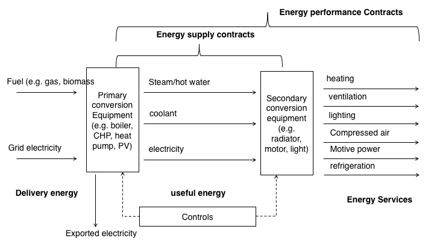
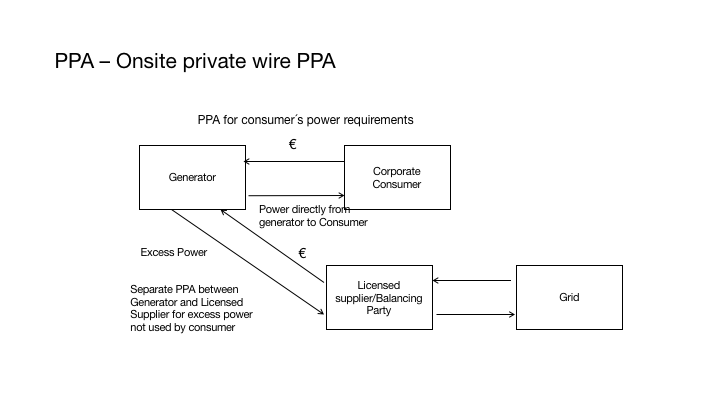
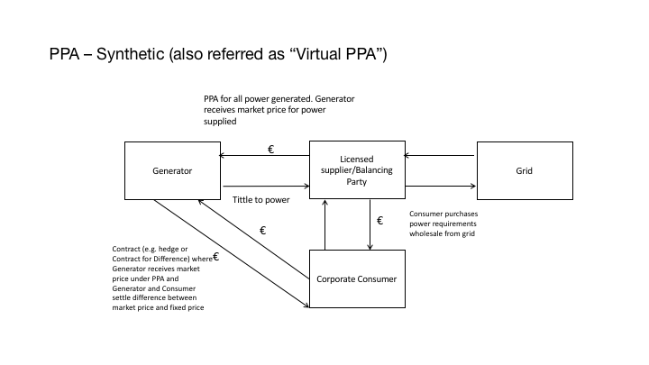

Chapter5 Energy Contracts
5.1 Basic Concepts
When dealing with Energy Services, some of the main challenges are:
Challenges in energy efficiency - Most organizations (building owners) don´t have the initial capital upfront to invest in Energy Efficiency measures;
No capital for investment - Banks are not specialized in this type of investment or, able to make an offer alone;
Difficulty to get bank loans - It´s a regulated market with technical certification needed, so out of scope of the usual business of usual lenders;
Technical complexity - Technical and complex deal structure, with several entities; and
No standard contracts - The insistence of a real standard Contract across countries or even within the same jurisdiction.
Most contracts are designed to answer a specific need or problem.
When we refer to a contract, on a very simples terms we mean:
An agreement with specific terms between two or more persons or entities in which there is a promise to do something in return for a valuable benefit (or consideration, in common law)
The existence of a contract requires finding the following factual elements:
an offer;
an acceptance of that offer which results in a meeting of the minds (also referred as “the mirror image rule”);
a promise to perform;
a valuable consideration (which can be a promise or payment in some form);
a time or event when performance must be made (or also refereed as meet commitments);
The terms and conditions for performance, including fulfilling promises;
performance, and
an intention to effect legal obligations (so we are excluding what doctrine refers as “not a serious proposal” too)
Depending on how the deal is structured, performance and its payment can be designed differently. Usually are dragged along the whole term of the contract (not a single performance and payment), namely if there are several installments instead of a single payment or, it´s a recurrent service.
Contract elements
Performance and Payment
Exhange (product /service) for a
Price
Terms and conditions
 The total energy used (not useful) can be expressed as how we use energy services, or secondary conversation that concerts to heating, ventilation, lighting and so on.
Bear in mind, that energy supply and energy performance are not equivalents. Contracting a certain amount of energy and an end use are not equals. Besides losses with secondary conversion, the first is related to a commodity (or raw material you buy to generated a certain output), the last to the end result.
The same amount of energy may give the same thermal comfort, or not, for example.
Energy contracts:
Energy Supply Contracts
Power Purchase Agreements (PPAs)
Energy Services Agreement (ESAs)
Energy Management Contracts (EMCs)
Energy Performance Contracts (EPCs)
Finally, to have a Contract you need, at least two persons or entities.
The Energy Efficiency Directive (EED) defines an ‘energy service provider’ as a “natural or legal person who delivers energy services or other energy efficiency improvement measures in a final customer’s facility or premises”.
They can be (alone or jointly):
-Utilities;
-Equipment manufacture/supplier;
-Supplier Manufacturer of building automation and control systems
-Facility management and operation company
-Consulting/engineering firm
-Independent specialist (focused on Energy efficiency services);
-Energy Data Companies;
-Governmental entities (namely under subsidized schemes)
-Banks and other Financial institutions (as intermediaries for EE related type of investments) and
-Others.
In a raw sense, you should understand that entity will not define the contract, meaning that a EPC will be a EPC, regardless if is specially used by one type of Entity (typical example of EE contracts with the Public Sector). Also, you can have a variety of entities so understanding the responsibility, strengths and weaknesses and governance among them is an import matter.
Finally, To have a Contract you need, at least two persons or entities.
The Energy Efficiency Directive (EED) defines an ‘energy service provider’ as a “natural or legal person who delivers energy services or other energy efficiency improvement measures in a final customer’s facility or premises”.
5.2 PPA´s
A power purchase agreement (PPA), or electricity power agreement, is a contract between two parties, one which generates electricity (the seller) and one which is looking to purchase electricity (the buyer). The PPA defines all of the commercial terms for the sale of electricity - it can be fixed, indexed or “shaped”- between the two parties, including when the project will begin commercial operation, schedule for delivery of electricity, penalties for under delivery, payment terms, and termination. A PPA is the principal agreement that defines the revenue and credit quality of a generating project and is thus a key instrument of project finance.
This differs from the traditional approach of simply buying electricity from licensed electricity suppliers, often known as utility (or wholesale) PPAs. PPA also are a way of choosing a certain type of energy, the most common example, if a company wants to achieved a certain percentage of renewables (or decrease its carbon footprint) to either improve overall rating of its assets (from real estate to overall company), doing a PPA with solar or wind farm is a way to achieve that goal.
There are several Business Models Involving PPAs We can have:
On-site sale
– Direct sale to customer on site (shopping centres, commercial centres, manufacturing industry, airports, ports etc.)
– Saves costs related to the use of the transmission grid (transmission, distribution, dispatching, general costs of system)
Or Sale through the grid
– Utility scale ground-mounted plants;
– Sale to energy utilities (peak load purchases, renewable energy source obligations);
– Sale to end users (large industrial clients);
– Sale to wholesalers or “aggregators”;
There are several Power Purchase Agreement structures, namely:
Onsite direct wire PPA
Sleeved off-site PPA
Synthetic PPA
Mini-utility
Wholesale PPA
The most simple PPA is the “Wholesale model”, where the generator sells all power supplier back to the grid. Most of the RES where implemented using this structure, where licenses where auctioned to generate a certain amount of energy in an exchange for a certain predefined tariff per MWh.
 Not all PPA are wholesale PPA´s and increasingly we see more often onsite private wire PPA´s. Instead of selling all back to the grid, namely activities that are energy intensive, as running servers of a company, or, they want to improve the % of RES in their overall energy mix, they can have power directly from generator to them and, a separate PPA, for either the excess power produced or as a last resort supplier.
In a Sleeved PPA, all power generated is sold by the corporate consumer to the licensed supplier – or balancing party – still is a Back to back PPA – Electricity Supplier purchases all power purchased by consumer. Consumer repurchases power it uses (performing balancing function).
 A Synthetic PPA or, also referred as a “Virtual PPA” is a Contract (e.g. hedge or Contract for Difference) where Generator receives market price under PPA and Generator and Consumer settle difference between market price and fixed price. Its virtual, because there is no physical purchased of electricity, like most Contract for Difference. If you already looked to commodities trading (as brent, for example), you you see that most have “financial liquidation and not physical liquidation.
Lastly, a mini utility PPA – Consumer purchases power it uses from Licensed Supplier. Licensed Supplier performs balancing Function too.
5.2.1 Curtailments
There are what so called Default provisions related to Curtailments
On the Buyer-Directed Curtailment: – Buyer may have the right to direct Seller to decrease or stop deliveries – Generally for economic reasons – Seller should be compensated – Make sure the Project is capable of complying
Third-Party Curtailment: – Interconnecting Utility or Transmission Provider – Broad curtailment rights in Interconnection Agreement – e.g. emergency, reliability, system maintenance – Frequency may depend on level of transmission service – Seller may or may not be compensated
Curtailments can be Compensated or not, where:
On the Compensated Curtailments: – Contract Price for each MWh Seller could have delivered – Plus, if applicable, value of lost benefits, grossed up for taxes
Or Non-Compensated Curtailments: – Big negotiation point and financing issue – Seller wants to maximize ability to get compensated – argument is that anything affecting transmission beyond the the Point of Delivery (POD) is Buyer’s risk – Generally no compensation for an “Emergency” – Buyer treats this like a force majeure; definition is important – Generally no compensation if curtailment results from Seller’s failure to maintain required permits or interconnection facilities at or prior to the Point of Delivery (POD) – Mechanics depend on market rules and Project specifics – Be careful if Buyer is also the Transmission Provider or Interconnecting Utility
5.3 Incentives and other schemes to support EE implementation
The Article 18 of the EED (Energy Efficiency Directive) stablishes regarding “Energy services”, that all Member States shall promote Energy Services and access by disseminating clear and easily accessible information, among other; on: (i) available energy service contracts and clauses that should be included in such contracts to guarantee energy savings and final customers’ rights; (ii) financial instruments, incentives, grants and loans to support energy efficiency service projects; (i) providing model contracts for energy performance contracting which include at least the items listed in Annex XIII;
Direct support as:
-Grants/Subsidies that can be as: Subsidy on a certain percentage of EE investment (CAPEX); or Financial Mechanism (Loans, Credit line…)., with better finantial terms as offereced by usual lenders, as banks. Most of the times, banks offered this termsunder certain governmental initiative, so they act as intermediaties of such Financial mechanims too.
Or as a Fiscal incentives, such as Rebates Deductions over taxable income (…) Or other schemes
They can be:
Special Purpose Vehicle (SPV), or a legal person, a company to perform a certain task/goal, Direct loan to acquire equipment + services contract; Rental with buy option (leasing); Other;
The main implications and differences may are: ownership and risk (namely in some events such as: bankruptcy, breach of contract, etc)
Lastly there are EE targets for specific sectors, namely for
non SME´s,
Specific industries (large combustion plants),
Energy intense activities;
Public sector, etc)There are targets these type of entities must comply under the general EED or other national legislation. Unlike the other cases, were such improvements are not mandatory, this entities have a strong incentive: legal one, not a market one.
5.3.1 Interconnections with Public Law
Most of the EE contracts may fall into a Public Contract (namely if you managing a public building, as a public hospital, school):
A Public Contract (also referred as Public Procurement) can be defined by Subjective or objective imputation, as:
- By type or entity (Public Entities and related);
- By type of Contract (more than 50% financed by public funds);
By sectorial areas (specific utilities markets in certain countries may be exempt from public procurement rules): If you will be considering using national or EU financial schemes you may have to fulfill public procurement rules, even not being a public entity, but because more than than 50% is financed by public funds)
For a utilities market to be exempt: the legal/regulatory environment permits access and competition in the sector concerned; the utility operators in the market concerned are subject to competitive pressure.
The are Thresholds
EU law sets minimum harmonised rules for tenders whose monetary value exceeds a certain amount and which are presumed to be of cross-border interest. The European rules ensure that the award of contracts of higher value for the provision of public goods and services must be fair, equitable, transparent and non-discriminatory. For tenders of lower value however, national rules apply, which nevertheless must respect general principles of EU law.